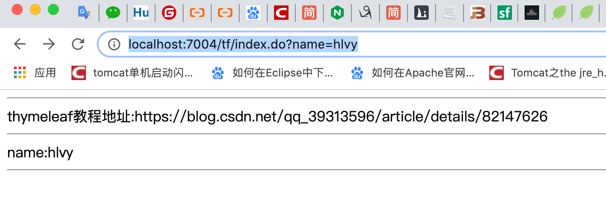

1.8.1. SpringBoot整合Thymeleaf
项目地址：https://github.com/heng1234/springboot2.x/commit/25bbc2433c6f5953575d22d3179383bf7273d82d
1.8.1.1.1. 常用模板引擎对比
| 模板引擎 | 优点 | 缺点 |
|---|---|---|
| jsp | 1、功能强大，可以写java代码 2、支持jsp标签（jsp tag） 3、支持表达式语言（el） 4、官方标准，用户群广，丰富的第三方jsp标签库 5、性能良好。jsp编译成class文件执行，有很好的性能表现 | 动态资源和静态资源全部耦合在一起，必须要在支持java的web服务器里运行（例如tomcat，jetty，resin等）服务器压力大 |
| FreeMarker | 1、不能编写java代码，可以实现严格的mvc分离 2、性能非常不错 3、对jsp标签支持良好 4、内置大量常用功能，使用非常方便 5、宏定义（类似jsp标签）非常方便 6、使用表达式语言 | 1、不是官方标准 2、用户群体和第三方标签库没有jsp多 |
| Thymeleaf | 静态html嵌入标签属性，浏览器可以直接打开模板文件，便于前后端联调。springboot官方推荐方案。 | 模板必须符合xml规范 |
1.8.1.1.2. SpringBoot整合Themeleaf
pom
<!--thymeleaf-->
<dependency>
<groupId>org.springframework.boot</groupId>
<artifactId>spring-boot-starter-thymeleaf</artifactId>
</dependency>
<!--web-->
<dependency>
<groupId>org.springframework.boot</groupId>
<artifactId>spring-boot-starter-web</artifactId>
</dependency>
<!--lombok-->
<dependency>
<groupId>org.projectlombok</groupId>
<artifactId>lombok</artifactId>
<optional>true</optional>
</dependency>
<!-- 允许使用非严格的 HTML 语法 -->
<dependency>
<groupId>net.sourceforge.nekohtml</groupId>
<artifactId>nekohtml</artifactId>
<version>1.9.22</version>
</dependency>
application.properties
server.port=7004
#开启模板缓存（默认值：true）
#开发时关闭缓存,不然没法看到实时页面
spring.thymeleaf.cache=false
#Check that the template exists before rendering it.
spring.thymeleaf.check-template=true
#检查模板位置是否正确（默认值:true）
spring.thymeleaf.check-template-location=true
#Content-Type的值（默认值：text/html）
spring.thymeleaf.servlet.content-type=text/html
#开启MVC Thymeleaf视图解析（默认值：true）
spring.thymeleaf.enabled=true
#模板编码
spring.thymeleaf.encoding=UTF-8
#要被排除在解析之外的视图名称列表，用逗号分隔
spring.thymeleaf.excluded-view-names=
#要运用于模板之上的模板模式。另见StandardTemplate-ModeHandlers(默认值：HTML5)
# 用非严格的 HTML
spring.thymeleaf.mode=HTML5
#在构建URL时添加到视图名称前的前缀（默认值：classpath:/templates/）
spring.thymeleaf.prefix=classpath:/templates/
#在构建URL时添加到视图名称后的后缀（默认值：.html）
spring.thymeleaf.suffix=.html
#Thymeleaf模板解析器在解析器链中的顺序。默认情况下，它排第一位。顺序从1开始，只有在定义了额外的TemplateResolver Bean时才需要设置这个属性。
#spring.thymeleaf.template-resolver-order=
#可解析的视图名称列表，用逗号分隔
#spring.thymeleaf.view-names=
#spring.mvc.view.prefix=/
#spring.mvc.view.suffix=.html
Controller
import org.springframework.stereotype.Controller;
import org.springframework.ui.Model;
import org.springframework.web.bind.annotation.RequestMapping;
import javax.servlet.http.HttpServletRequest;
/**
* @author : kaifa
* create at: 2019-10-23 13:55
* @description: thymeleaf 控制层
*/
@Controller
@RequestMapping("tf")
public class ThyeleafController {
@RequestMapping("index.do")
public String toIndex(HttpServletRequest request, String name, Model model){
model.addAttribute("name",name);
model.addAttribute("href","https://blog.csdn.net/qq_39313596/article/details/82147626");
return "index";
}
}
templates新建index.html
<!DOCTYPE html>
<html lang="en">
<!--<html xmlns:th="http://www.thymeleaf.org"> 这可以省略-->
<head>
<meta charset="UTF-8">
<title>Title</title>
</head>
<body>
<div>
<hr/>
thymeleaf教程地址:<span th:text="${href}"></span>
<hr/>
name:<span th:text="${name}"></span>
<hr/>
</div>
</body>
</html>
访问http://localhost:7004/tf/index.do?name=hlvy
